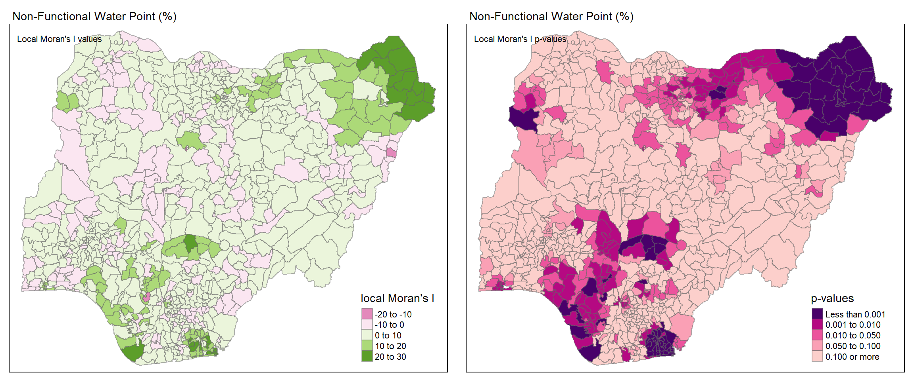
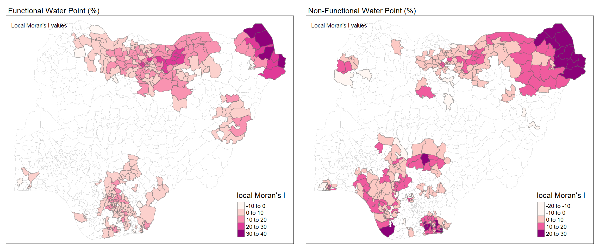
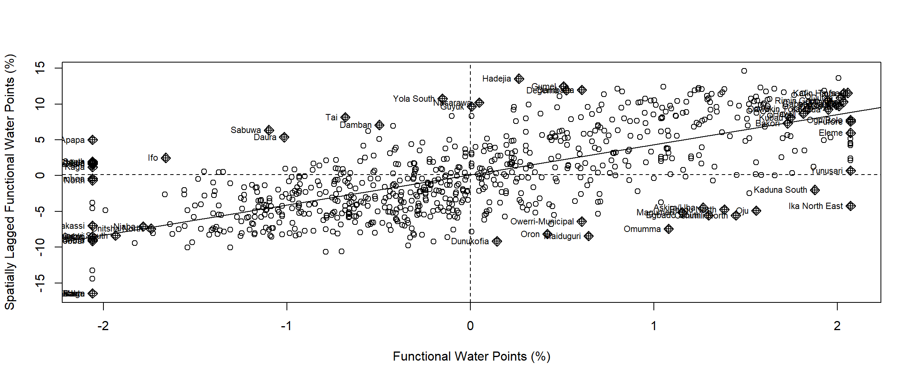

Press to toggle code
pacman::p_load(sf, tidyverse, tmap, spdep)The use of geospatial analytics can be beneficial in addressing different complex problems in society. As a sample use case, we will be applying different local and global measures of spatial autocorrelation to reveal spatial patterns in the status of water points in the country of Nigeria.

“The sea, once it casts its spell, holds one in its net of wonder forever. Water and air, the two essential fluids on which all life depends, have become global garbage cans. We forget that the water cycle and life cycle are one.”
-- Jacques Yves Coseau, Famous Oceanographer
Water is the root of all life, and yet access to such an important resource is not universally met. Inaccessibility to water negatively impacts health and other aspects of life. According to UNICEF, 785 million people today do not have basic access to water and back in March 2021 it was reported that 1 in 5 children worldwide do not have enough water. How are children supposed to areas where water is not readily available?
The figures in Nigeria report that a staggering 26.5 million children are experiencing high or extremely high water vulnerability. This means water sources are scarce or are of poor quality.
The Water Point Data Exchange (WPdx) is a data collection project with the goal of encouraging evidence-based decision-making that improves rural water services using water point data. Using core parameters that are commonly measured by governments, non-governmental organizations, and researchers are set by the WPdx Data Standard. The data can be found in the WPdx Data Repository.
In culmination of the first four chapters of “R for Geospatial Data Science and Analytics” and first two lessons of ISSS624, this is my submission for Take-home Exercise 1. The following objectives were accomplished in this Take-home Exercise:
Use the appropriate sf methods, import the geospatial data into R and save it in a simple feature data frame format.
Use the appropriate tidyr and dplyr methods, derive the proportion of functional and non-functional water point at LGA level.
Perform outliers/clusters analysis using appropriate local measures of spatial association methods.
Perform hotspot area analysis by using appropriate local measures of spatial association methods.
Plot maps to show the spatial distribution of functional and non-functional water point rate at LGA level by using appropriate thematic mapping technique provided by the tmap package.
Plot hotspot areas and outliers/clusters maps of functional and non-functional water point rate at LGA level by using appropriate thematic mapping technique provided by the tmap package.
Before we can start doing any sort of analyses, the first step is acquiring the data.
There are two important geospatial datasets to access which will be expounded upon below.
First we have the Level-2 Administrative Boundary (A.K.A. Local Government Area) of Nigeria, as sourced from geoBoundaries. The screenshot attached shows where to acquire the dataset.

The downloaded ZIP file will contain GIS data for the regular and simplified boundaries. For the purpose of this study, we will not use the simplified data. All related files were renamed to “geoBoundaries” for simplicity’s sake.
To be able to analyze the water points of different areas, we’ll need the data from Water Point Data Exchange (WPdx) Repository as mentioned previously. There are two versions, WPdx-Basic and WPdx+. For this take-home exercise, we are making use of WPdx+.

The site allows us to export the data in different file formats. For this exercise, I downloaded the Shapefile for familiarity. To simplify the filename, all related files were renamed to “geo_export”.
To get started on coding with R, we need to first load the necessary packages that will help us with the processes. In the code chunk below, p_load() of the pacman package is used to install and load the following R packages into R environment:
sf - support for simple features, a standardized way to encode spatial vector datatidyverse - core packages for data analysestmap - used for thematic plotting of mapsspedep - a library for creating spacial weightspacman::p_load(sf, tidyverse, tmap, spdep)Using the st_read() function of the sf package, the code chunk below creates a simple features data table from the geoBoundaries shapefile.
nga_bounds <- st_read(dsn = "data", layer = "geoBoundaries", crs = 4326)
Nigeria has 774 local government areas (LGAs). The terms “LGA”, “shape”, “polygon”,“region” and “features” will be used interchangeable from this point forward in the take-home exercise.
Similarly above, we once again use st_read() to import the geo_export shapefile. However, this time we need to use the filter() function to make sure that we only extract the data related to Nigeria. The code snippet filter(clean_coun == "Nigeria") does just this, where ‘clean_coun’ is the column from the data table referring to the country name and == asks for the records set as “Nigeria”.
nga_wp <- st_read(dsn = "data", layer = "geo_export", crs = 4326) %>% filter(clean_coun == "Nigeria")We end up with a data table containing 95,008 records and 73 variables. The geometry type is POINT, meaning each record is a point relative to the coordinate system. The records refer to different water points in Nigeria with different descriptions such as status, water source, usage capacity, etc.
Data, when collected, is very raw and isn’t perfect. Sometimes some magic needs to be done to shape the data into something that is usable for the analytical process. In this section, we try to collate the individual water point data to usable attributes that describe the ratio of functional water points per LGA.
In the previous section we ended up with a data table that has 73 variables. That sounds like a lot because it is! Since the objective of this exercise is only related to the functionality of different water points, we are mostly interested in the different statuses of each water point.
'status_cle'Since our primary focus is the status of each water point, we need to take a look at the variable 'status_cle'. It would be very problematic if there were empty values. To check we use the code chunk below:
sum(is.na(nga_wp$status_cle))This code chunk adds up all the cells in 'status_cle' that return TRUE from the is.na() function. The result tells us that there are 10,656 missing cells. That’s a lot! What do we do with them?
The code chunk below uses mutate() to replace the current 'status_cle'column with one where replace_na() is applied. The function replace_na replaces N/A values in a column with the second argument, in this case “Unknown”.
nga_wp <- nga_wp %>% mutate(status_cle = replace_na(status_cle, "Unknown"))By running the previous code chunk we can verify that there are no more N/A values.
sum(is.na(nga_wp$status_cle))So we have the individual water points, but how do we translate it in such a way that we can compare it for each LGA?
First, the code chunk below makes use of unique() to output the set of all unique values in the column.
unique(nga_wp$status_cle)
The output shows that there are 7 different status values. However, some of them fall under the same status umbrella of either “Functional” or “Non-Functional”, they just contain extra information.
wpt_functional <- nga_wp %>% filter(status_cle %in% c("Functional", "Functional but not in use", "Functional but needs repair"))
The code chunk above extracts all the records that have the following statuses: “Functional”, “Functional but not in use”, and “Functional but needs repair” using the filter() function as saves to 'wpt_functional'.
wpt_nonfunctional <- nga_wp %>% filter(status_cle %in% c("Abandoned/Decommissioned", "Abandoned", "Non-Functional", "Non functional due to dry season", "Non-Functional due to dry season"))
Similarly, the code chunk above extracts all the records that have the following statuses: “Abandoned/Decommissioned”, “Abandoned”, “Non-Functional”, “Non functional due to dry season”, and “Non-Functional due to dry season” and saves them to 'wpt_nonfunctional'.
wpt_unknown <- nga_wp %>% filter(status_cle == "Unknown")Lastly, we do the same for all records with the status “Unknown” and save it to 'wpt_unknown'.
This is where the magic happens. Since we know the individual water points (as POINT data), we can see where they overlap with the polygons (LGAs) to determine regional data. The function st_intersects() returns true if two geometries intersect, meaning if the water point is found within the polygon boundary of an LGA, it will return true. The function lengths() gives the number of true values (or count) returned from st_intersects().
New columns are then added to our original boundary data 'nga_bounds' which dictate the count of total, functional, non-functional, and unknown water points per LGA.
nga_wp_final <- nga_bounds %>% mutate(`total_wpt` = lengths(st_intersects(nga_bounds, nga_wp))) %>% mutate(`wpt_functional` = lengths(st_intersects(nga_bounds, wpt_functional))) %>% mutate(`wpt_nonfunctional` = lengths(st_intersects(nga_bounds, wpt_nonfunctional))) %>% mutate(`wpt_unknown` = lengths(st_intersects(nga_bounds, wpt_unknown)))
Not all regions are made equal. It wouldn’t make sense to compare the number of water points in a smaller region to a bigger region because it’s possible that larger land area would contribute to having more water points. To give a better analysis of the collective water point status per region, we can get the percentage or ratio of functional and non-functional water points.
The code chunk below adds two new columns to our dataframe, which contain the percentage of functional and non-functional water points.
nga_wp_final <- nga_wp_final %>% mutate(`pct_functional` = `wpt_functional`/`total_wpt`) %>% mutate(`pct_nonfunctional` = `wpt_nonfunctional`/`total_wpt`)Unfortunately, some of the regions either don’t have water points or their data is not recorded. Because of this, performing the division above to get the percentages may lead to NaN values when getting the percentages. A sample is shown for the LGA “Abadam”.
To fix this, we replace the NaN values with a value of 0 using the code chunk below. The function replace_na() which was used earlier for empty cells, also works for NaN values.
nga_wp_final <- nga_wp_final %>% mutate(pct_functional = replace_na(pct_functional, 0)) %>% mutate(pct_nonfunctional= replace_na(pct_nonfunctional, 0))Since the source of our boundary file was an international source, the CRS in use is geographic. What this means is the points are plotted on the earth’s surface, which is ellipsoid. We need transform the data to the appropriate projected CRS, which will be plotted on a flat surface. Different countries also use different projected CRSs.
st_crs(nga_wp_final)
The code chunk below uses st_transform to transform 'nga_wp_final' to EPSG Code 26392, which is one of the projected coordinate reference systems used for Nigeria.
nga_wp_final <- st_transform(nga_wp_final, crs = 26392)Checking if the CRS changed, we have the results below.
st_crs(nga_wp_final)
Now that we’ve completed adjusting our data, we can save the new dataset as an RDS file. RDS files are data files native to R. The code chunk below saves our spatial dataframe ‘nga_wp_final’ into an RDS file called “nga_wp_final.rds”.
write_rds(nga_wp_final, "data/nga_wp_final.rds")We can now reload the dataset back to R using read_rds as shown in the code chunk below.
nga_wp_final <- read_rds("data/nga_wp_final.rds")ggplot(nga_wp_final, aes(pct_functional)) + geom_histogram(fill = "#ffb7b1", color = "black", binwidth=0.1)
ggplot(nga_wp_final, aes(pct_nonfunctional)) + geom_histogram(fill = "#ffb7b1", color = "black", binwidth=0.1)
The function qtm() is a handy function that stands for “quick thematic mapping” and provides an easy way of visualizing geospatial data by default. To see the distribution of both functional and non-functional water point percentages, we run the code chunk below. By setting the 'fill' argument as either 'pct_functional' or 'pct_nonfunctional', we can create a chloropleth mapping of the corresponding attribute.
# Functional Water Point Distribution
pct_functional.map <- qtm(nga_wp_final, fill = "pct_functional", fill.palette = "RdPu", fill.title = "Percentage (%)", borders = "black", title = "Distribution of Functional Water Points (%)") + tm_legend(legend.height = 0.25)
# Non-Functional Water Point Distribution
pct_nonfunctional.map <- qtm(nga_wp_final, fill = "pct_nonfunctional", fill.palette = "RdPu", fill.title = "Percentage (%)", borders = "black", title = "Distribution of Non-Functional Water Points (%)") + tm_legend(legend.height = 0.25)
tmap_arrange (pct_functional.map, pct_nonfunctional.map, ncol = 2, asp = 1)
Spatial autocorrelation is the term used to describe the presence of systematic spatial variation in a variable and positive spatial autocorrelation, which is most often encountered in practical situations, is the tendency for areas or sites that are close together to have similar values. Using different spatial autocorrelation statistical measures, we can determine different spatial patterns.
Before we can compute for the different statistical measures though, we need to define the neighbors of each feature and their relationship defined by spatial weights.
There are different ways to construct the spatial weights matrix and it depends on how neighbors are defined. For this study, we will be using adaptive distance-based spatial weights.
Since distance is being measured and we are using polygons, we need to define centroids, which are the points geometric centers of polygons. These are the values that will determine “distance” between the features. The code chunk below uses st_centroid() to create a POINT type spatial dataframe containing all the centroids of our LGAs or features as computed from the st_geometry() values.
coords <- st_centroid(st_geometry(nga_wp_final))
coordsGeometry set for 774 features
Geometry type: POINT
Dimension: XY
Bounding box: xmin: 39384.4 ymin: 41598.31 xmax: 1322777 ymax: 1073546
Projected CRS: Minna / Nigeria Mid Belt
First 5 geometries:Using the function knn2nb() we can turn the list of k-neareset points from knearneigh() to a list of neighbors per feature. The argument 'k' sets the number of neighbors. The code chunk defines 8 neighboring LGAs for each LGA.
knn <- knn2nb(knearneigh(coords, k=8))
knnNeighbour list object:
Number of regions: 774
Number of nonzero links: 6192
Percentage nonzero weights: 1.033592
Average number of links: 8
Non-symmetric neighbours listThe previous code chunk only creates a list of neighbors. We need to use nb2listw() to create the spatial weight matrix. The argument 'style' dictates the encoding. In this case, we use basic binary encoding as represented by the value “B”.
knn_lw <- nb2listw(knn, style = 'B')
summary(knn_lw)Characteristics of weights list object:
Neighbour list object:
Number of regions: 774
Number of nonzero links: 6192
Percentage nonzero weights: 1.033592
Average number of links: 8
Non-symmetric neighbours list
Link number distribution:
8
774
774 least connected regions:
1 2 3 4 5 6 7 8 9 10 11 12 13 14 15 16 17 18 19 20 21 22 23 24 25 26 27 28 29 30 31 32 33 34 35 36 37 38 39 40 41 42 43 44 45 46 47 48 49 50 51 52 53 54 55 56 57 58 59 60 61 62 63 64 65 66 67 68 69 70 71 72 73 74 75 76 77 78 79 80 81 82 83 84 85 86 87 88 89 90 91 92 93 94 95 96 97 98 99 100 101 102 103 104 105 106 107 108 109 110 111 112 113 114 115 116 117 118 119 120 121 122 123 124 125 126 127 128 129 130 131 132 133 134 135 136 137 138 139 140 141 142 143 144 145 146 147 148 149 150 151 152 153 154 155 156 157 158 159 160 161 162 163 164 165 166 167 168 169 170 171 172 173 174 175 176 177 178 179 180 181 182 183 184 185 186 187 188 189 190 191 192 193 194 195 196 197 198 199 200 201 202 203 204 205 206 207 208 209 210 211 212 213 214 215 216 217 218 219 220 221 222 223 224 225 226 227 228 229 230 231 232 233 234 235 236 237 238 239 240 241 242 243 244 245 246 247 248 249 250 251 252 253 254 255 256 257 258 259 260 261 262 263 264 265 266 267 268 269 270 271 272 273 274 275 276 277 278 279 280 281 282 283 284 285 286 287 288 289 290 291 292 293 294 295 296 297 298 299 300 301 302 303 304 305 306 307 308 309 310 311 312 313 314 315 316 317 318 319 320 321 322 323 324 325 326 327 328 329 330 331 332 333 334 335 336 337 338 339 340 341 342 343 344 345 346 347 348 349 350 351 352 353 354 355 356 357 358 359 360 361 362 363 364 365 366 367 368 369 370 371 372 373 374 375 376 377 378 379 380 381 382 383 384 385 386 387 388 389 390 391 392 393 394 395 396 397 398 399 400 401 402 403 404 405 406 407 408 409 410 411 412 413 414 415 416 417 418 419 420 421 422 423 424 425 426 427 428 429 430 431 432 433 434 435 436 437 438 439 440 441 442 443 444 445 446 447 448 449 450 451 452 453 454 455 456 457 458 459 460 461 462 463 464 465 466 467 468 469 470 471 472 473 474 475 476 477 478 479 480 481 482 483 484 485 486 487 488 489 490 491 492 493 494 495 496 497 498 499 500 501 502 503 504 505 506 507 508 509 510 511 512 513 514 515 516 517 518 519 520 521 522 523 524 525 526 527 528 529 530 531 532 533 534 535 536 537 538 539 540 541 542 543 544 545 546 547 548 549 550 551 552 553 554 555 556 557 558 559 560 561 562 563 564 565 566 567 568 569 570 571 572 573 574 575 576 577 578 579 580 581 582 583 584 585 586 587 588 589 590 591 592 593 594 595 596 597 598 599 600 601 602 603 604 605 606 607 608 609 610 611 612 613 614 615 616 617 618 619 620 621 622 623 624 625 626 627 628 629 630 631 632 633 634 635 636 637 638 639 640 641 642 643 644 645 646 647 648 649 650 651 652 653 654 655 656 657 658 659 660 661 662 663 664 665 666 667 668 669 670 671 672 673 674 675 676 677 678 679 680 681 682 683 684 685 686 687 688 689 690 691 692 693 694 695 696 697 698 699 700 701 702 703 704 705 706 707 708 709 710 711 712 713 714 715 716 717 718 719 720 721 722 723 724 725 726 727 728 729 730 731 732 733 734 735 736 737 738 739 740 741 742 743 744 745 746 747 748 749 750 751 752 753 754 755 756 757 758 759 760 761 762 763 764 765 766 767 768 769 770 771 772 773 774 with 8 links
774 most connected regions:
1 2 3 4 5 6 7 8 9 10 11 12 13 14 15 16 17 18 19 20 21 22 23 24 25 26 27 28 29 30 31 32 33 34 35 36 37 38 39 40 41 42 43 44 45 46 47 48 49 50 51 52 53 54 55 56 57 58 59 60 61 62 63 64 65 66 67 68 69 70 71 72 73 74 75 76 77 78 79 80 81 82 83 84 85 86 87 88 89 90 91 92 93 94 95 96 97 98 99 100 101 102 103 104 105 106 107 108 109 110 111 112 113 114 115 116 117 118 119 120 121 122 123 124 125 126 127 128 129 130 131 132 133 134 135 136 137 138 139 140 141 142 143 144 145 146 147 148 149 150 151 152 153 154 155 156 157 158 159 160 161 162 163 164 165 166 167 168 169 170 171 172 173 174 175 176 177 178 179 180 181 182 183 184 185 186 187 188 189 190 191 192 193 194 195 196 197 198 199 200 201 202 203 204 205 206 207 208 209 210 211 212 213 214 215 216 217 218 219 220 221 222 223 224 225 226 227 228 229 230 231 232 233 234 235 236 237 238 239 240 241 242 243 244 245 246 247 248 249 250 251 252 253 254 255 256 257 258 259 260 261 262 263 264 265 266 267 268 269 270 271 272 273 274 275 276 277 278 279 280 281 282 283 284 285 286 287 288 289 290 291 292 293 294 295 296 297 298 299 300 301 302 303 304 305 306 307 308 309 310 311 312 313 314 315 316 317 318 319 320 321 322 323 324 325 326 327 328 329 330 331 332 333 334 335 336 337 338 339 340 341 342 343 344 345 346 347 348 349 350 351 352 353 354 355 356 357 358 359 360 361 362 363 364 365 366 367 368 369 370 371 372 373 374 375 376 377 378 379 380 381 382 383 384 385 386 387 388 389 390 391 392 393 394 395 396 397 398 399 400 401 402 403 404 405 406 407 408 409 410 411 412 413 414 415 416 417 418 419 420 421 422 423 424 425 426 427 428 429 430 431 432 433 434 435 436 437 438 439 440 441 442 443 444 445 446 447 448 449 450 451 452 453 454 455 456 457 458 459 460 461 462 463 464 465 466 467 468 469 470 471 472 473 474 475 476 477 478 479 480 481 482 483 484 485 486 487 488 489 490 491 492 493 494 495 496 497 498 499 500 501 502 503 504 505 506 507 508 509 510 511 512 513 514 515 516 517 518 519 520 521 522 523 524 525 526 527 528 529 530 531 532 533 534 535 536 537 538 539 540 541 542 543 544 545 546 547 548 549 550 551 552 553 554 555 556 557 558 559 560 561 562 563 564 565 566 567 568 569 570 571 572 573 574 575 576 577 578 579 580 581 582 583 584 585 586 587 588 589 590 591 592 593 594 595 596 597 598 599 600 601 602 603 604 605 606 607 608 609 610 611 612 613 614 615 616 617 618 619 620 621 622 623 624 625 626 627 628 629 630 631 632 633 634 635 636 637 638 639 640 641 642 643 644 645 646 647 648 649 650 651 652 653 654 655 656 657 658 659 660 661 662 663 664 665 666 667 668 669 670 671 672 673 674 675 676 677 678 679 680 681 682 683 684 685 686 687 688 689 690 691 692 693 694 695 696 697 698 699 700 701 702 703 704 705 706 707 708 709 710 711 712 713 714 715 716 717 718 719 720 721 722 723 724 725 726 727 728 729 730 731 732 733 734 735 736 737 738 739 740 741 742 743 744 745 746 747 748 749 750 751 752 753 754 755 756 757 758 759 760 761 762 763 764 765 766 767 768 769 770 771 772 773 774 with 8 links
Weights style: B
Weights constants summary:
n nn S0 S1 S2
B 774 599076 6192 11152 201942plot(nga_wp_final$geometry, border="lightgrey", main="Adaptive Distance-based Neighbors of Nigeria LGAs")
plot(knn, coords, pch = 20, cex = 0.4, add=TRUE, col="#FF5A5A", length=0.08)The package spdep provides a function moran.test() to simply perform Moran’s I statistics. The first test is the variable, the argument 'listw' contains the spatial weights matrix, and 'zero.policy' and 'na.action' just determine what to do for features without neighbors and N/A variable values.
'pct_functional'moran.test(nga_wp_final$pct_functional, listw=knn_lw, zero.policy = TRUE, na.action=na.omit)
Moran I test under randomisation
data: nga_wp_final$pct_functional
weights: knn_lw
Moran I statistic standard deviate = 31.161, p-value < 2.2e-16
alternative hypothesis: greater
sample estimates:
Moran I statistic Expectation Variance
0.5271813748 -0.0012936611 0.0002876224 Based on the results, the p-value being less than \(2.2e^{-16}\) , which is below 0.05, dictates that we can reject the null hypothesis stating that the variable 'pct_functional' is randomly distributed and do not depend on each other. The Moran I value of 0.5271813748 being statistically significant and positive dictates that 'pct_functional' values are clustered similarly.
'pct_nonfunctional'moran.test(nga_wp_final$pct_nonfunctional, listw=knn_lw, zero.policy = TRUE, na.action=na.omit)
Moran I test under randomisation
data: nga_wp_final$pct_nonfunctional
weights: knn_lw
Moran I statistic standard deviate = 27.281, p-value < 2.2e-16
alternative hypothesis: greater
sample estimates:
Moran I statistic Expectation Variance
0.4613158941 -0.0012936611 0.0002875562 Based on the results, the p-value being less than \(2.2e^{-16}\) , which is below 0.05, dictates that we can reject the null hypothesis stating that the variable 'pct_nonfunctional' is randomly distributed and do not depend on each other. The Moran I value of 0.4613158941 being statistically significant and positive dictates that 'pct_nonfunctional' values are clustered similarly.
'pct_functional' and 'pct_nonfunctional'Spatial correlograms are great to examine patterns of spatial autocorrelation. In this case, they show the Moran’s I when you increase the distance (spatial lag) between them.
MI_corr_fun <- sp.correlogram(knn,
nga_wp_final$pct_functional,
order=5,
method="I",
style="B")
MI_corr_nonfun <- sp.correlogram(knn,
nga_wp_final$pct_nonfunctional,
order=5,
method="I",
style="B")
par(mfrow=c(1,2))
plot(MI_corr_fun, main = "Functional")
plot(MI_corr_nonfun, main = "Non-Functional")print(MI_corr_fun)Spatial correlogram for nga_wp_final$pct_functional
method: Moran's I
estimate expectation variance standard deviate Pr(I) two sided
1 (774) 5.2718e-01 -1.2937e-03 2.8762e-04 31.161 < 2.2e-16
2 (774) 4.2140e-01 -1.2937e-03 1.3391e-04 36.527 < 2.2e-16
3 (774) 3.5315e-01 -1.2937e-03 8.3863e-05 38.705 < 2.2e-16
4 (774) 2.6765e-01 -1.2937e-03 6.0645e-05 34.535 < 2.2e-16
5 (774) 2.2873e-01 -1.2937e-03 4.7707e-05 33.303 < 2.2e-16
1 (774) ***
2 (774) ***
3 (774) ***
4 (774) ***
5 (774) ***
---
Signif. codes: 0 '***' 0.001 '**' 0.01 '*' 0.05 '.' 0.1 ' ' 1print(MI_corr_nonfun)Spatial correlogram for nga_wp_final$pct_nonfunctional
method: Moran's I
estimate expectation variance standard deviate Pr(I) two sided
1 (774) 4.6132e-01 -1.2937e-03 2.8756e-04 27.281 < 2.2e-16
2 (774) 3.2860e-01 -1.2937e-03 1.3388e-04 28.511 < 2.2e-16
3 (774) 2.2169e-01 -1.2937e-03 8.3844e-05 24.352 < 2.2e-16
4 (774) 1.2965e-01 -1.2937e-03 6.0631e-05 16.817 < 2.2e-16
5 (774) 7.1147e-02 -1.2937e-03 4.7696e-05 10.489 < 2.2e-16
1 (774) ***
2 (774) ***
3 (774) ***
4 (774) ***
5 (774) ***
---
Signif. codes: 0 '***' 0.001 '**' 0.01 '*' 0.05 '.' 0.1 ' ' 1Local Indicators of Spatial Association or LISA are statistical methods that indicate the existence of significant clustering in the spatial arrangement of a given variable around a feature.
'pct_functional' and 'pct_nonfunctional'The function localmoran() of the spdep package computes \(I_i\) values, given a set of \(z_i\) values and a listw object providing neighbor weighting information for the polygon associated with the \(z_i\) values.
# Functional
localMI_fun <- localmoran(nga_wp_final$pct_functional, knn_lw, na.action = na.omit, zero.policy = TRUE)
# Non-functional
localMI_nonfun <- localmoran(nga_wp_final$pct_nonfunctional, knn_lw, na.action = na.omit, zero.policy = TRUE)head(localMI_fun, n = 5) Ii E.Ii Var.Ii Z.Ii Pr(z != E(Ii))
1 2.5100432 -0.001328196 1.01853344 2.4884177 1.283129e-02
2 2.5545352 -0.001431708 1.09789794 2.4393507 1.471368e-02
3 33.9550743 -0.043926357 33.50573077 5.8736303 4.263537e-09
4 -0.6153427 -0.001593282 1.22177539 -0.5552588 5.787177e-01
5 0.2676861 -0.000065655 0.05035578 1.1931846 2.327971e-01head(localMI_nonfun, n = 5) Ii E.Ii Var.Ii Z.Ii Pr(z != E(Ii))
1 5.407157 -0.006784813 5.199415 2.374304 1.758207e-02
2 4.964822 -0.004189178 3.211341 2.772853 5.556728e-03
3 23.376412 -0.030241154 23.106738 4.869339 1.119723e-06
4 1.735812 -0.013188412 10.098598 0.550376 5.820615e-01
5 7.139931 -0.006117971 4.688784 3.300166 9.662752e-04'pct_functional'The code chunk below save the local Moran values for 'pct_functional' to our main spatial dataframe ‘nga_wp_final’ using the function cbind() which combines two dataframes.
nga_wp_final.localMI_fun <- cbind(nga_wp_final,localMI_fun) %>% rename(Pr.Ii = Pr.z....E.Ii..)Using the different tmap functions, we can map the local Moran’s I values and p-values for 'pct_functional' using the code chunk below.
localMI.map <- tm_shape(nga_wp_final.localMI_fun) + tm_fill(col = "Ii", style = "pretty", palette = "PiYG", title = "local Moran's I") + tm_borders(alpha = 0.5)+ tm_layout(main.title = "Functional Water Point (%)", main.title.size = 0.9, title = "Local Moran's I values", title.size = 0.7, legend.width = 0.3, legend.height = 0.25)
pvalue.map <- tm_shape(nga_wp_final.localMI_fun) +
tm_fill(col = "Pr.Ii", breaks=c(-Inf, 0.001, 0.01, 0.05, 0.1, Inf),palette="-RdPu", title = "p-values") + tm_borders(alpha = 0.5)+ tm_layout(main.title = "Functional Water Point (%)", main.title.size = 0.9, title = "Local Moran's I p-values", title.size = 0.7, legend.width = 0.3, legend.height = 0.25)
tmap_arrange(localMI.map, pvalue.map, ncol=2)
'pct_nonfunctional'Similar code chunks are used for 'pct_nonfunctional' as shown below.
nga_wp_final.localMI_nonfun <- cbind(nga_wp_final,localMI_nonfun) %>% rename(Pr.Ii = Pr.z....E.Ii..)localMI.map <- tm_shape(nga_wp_final.localMI_nonfun) + tm_fill(col = "Ii", style = "pretty", palette = "PiYG", title = "local Moran's I") + tm_borders(alpha = 0.5)+ tm_layout(main.title = "Non-Functional Water Point (%)", main.title.size = 0.9, title = "Local Moran's I values", title.size = 0.7, legend.width = 0.3, legend.height = 0.25)
pvalue.map <- tm_shape(nga_wp_final.localMI_nonfun) +
tm_fill(col = "Pr.Ii", breaks=c(-Inf, 0.001, 0.01, 0.05, 0.1, Inf),palette="-RdPu", title = "p-values") + tm_borders(alpha = 0.5)+ tm_layout(main.title = "Non-Functional Water Point (%)", main.title.size = 0.9, title = "Local Moran's I p-values", title.size = 0.7, legend.width = 0.3, legend.height = 0.25)
tmap_arrange(localMI.map, pvalue.map, ncol=2)
'pct_functional' and 'pct_nonfunctional' with p-value > 0.05It’s a bit difficult to clearly compare the local Moran’s I values and p-values based on the chloropleth mapping. By using nga_wp_final.localMI_fun[nga_wp_final.localMI_fun$Pr.Ii < 0.05,] as the argument of tm_shape() , we are telling R to color the features that have p-values greater than 0.05. This means these are the LGAs with local Moran I values for 'pct_functional' or 'pct_nonfunctional' that are statistically significant.
localMI_fun.map <- tm_shape(nga_wp_final.localMI_fun)+ tm_fill("white") + tm_borders("grey", lwd = 0.5, alpha = 0.5) + tm_shape(nga_wp_final.localMI_fun[nga_wp_final.localMI_fun$Pr.Ii < 0.05,]) + tm_fill(col = "Ii", style = "pretty", title = "local Moran's I", palette = "RdPu") + tm_borders(alpha = 0.5) + tm_layout(main.title = "Functional Water Point (%)", main.title.size = 0.9, title = "Local Moran's I values", title.size = 0.7, legend.width = 0.3, legend.height = 0.25)
localMI_nonfun.map <- tm_shape(nga_wp_final.localMI_nonfun)+ tm_fill("white") + tm_borders("grey", lwd = 0.5, alpha = 0.5) + tm_shape(nga_wp_final.localMI_nonfun[nga_wp_final.localMI_nonfun$Pr.Ii < 0.05,]) + tm_fill(col = "Ii", style = "pretty",title = "local Moran's I", palette = "RdPu") + tm_borders(alpha = 0.5) + tm_layout(main.title = "Non-Functional Water Point (%)", main.title.size = 0.9, title = "Local Moran's I values", title.size = 0.7, legend.width = 0.3, legend.height = 0.25)
tmap_arrange(localMI_fun.map, localMI_nonfun.map, ncol=2)
'pct_functional''pct_functional'nga_wp_final$Z.pct_functional <- scale(nga_wp_final$pct_functional) %>% as.vector
mscat_fun <- moran.plot(nga_wp_final$Z.pct_functional, knn_lw,labels=as.character(nga_wp_final$shapeName), xlab = "Functional Water Points (%)", ylab = "Spatially Lagged Functional Water Points (%)")
'pct_nonfunctional'nga_wp_final$Z.pct_nonfunctional <- scale(nga_wp_final$pct_nonfunctional) %>% as.vector
mscat_nonfun <- moran.plot(nga_wp_final$Z.pct_nonfunctional, knn_lw,labels=as.character(nga_wp_final$shapeName), xlab = "Functional Water Points (%)", ylab = "Spatially Lagged Functional Water Points (%)")'pct_functional' and 'pct_nonfunctional'The code chunk below prepares the LISA cluster map. The function lag.listw() uses the first argument, the spatial weights matrix, to create a spatially lagged variable of the second argument. The next code snippet following centers the lagged variable to its mean using \(x-\bar{x}\) which is basically the deviation.
The four lines of quadrant code define the low-low (1), low-high (2), high-low (3) and high-high (4) categories. The fifth line after places non-significant Moran in the category 0.
quadrant <- vector(mode="numeric",length=nrow(localMI_fun))
signif <- 0.05
# Functional
nga_wp_final$lag_pct_functional <- lag.listw(knn_lw, nga_wp_final$pct_functional)
DV <- nga_wp_final$lag_pct_functional - mean(nga_wp_final$lag_pct_functional)
LM_I <- localMI_fun[,1]
quadrant[DV <0 & LM_I>0] <- 1
quadrant[DV >0 & LM_I<0] <- 2
quadrant[DV <0 & LM_I<0] <- 3
quadrant[DV >0 & LM_I>0] <- 4
quadrant[localMI_fun[,5]>signif] <- 0
nga_wp_final.localMI_fun$quadrant <- quadrant
# Non-Functional
nga_wp_final$lag_pct_nonfunctional <- lag.listw(knn_lw, nga_wp_final$pct_nonfunctional)
DV <- nga_wp_final$lag_pct_nonfunctional - mean(nga_wp_final$lag_pct_nonfunctional)
LM_I <- localMI_nonfun[,1]
quadrant[DV <0 & LM_I>0] <- 1
quadrant[DV >0 & LM_I<0] <- 2
quadrant[DV <0 & LM_I<0] <- 3
quadrant[DV >0 & LM_I>0] <- 4
quadrant[localMI_fun[,5]>signif] <- 0
nga_wp_final.localMI_nonfun$quadrant <- quadrant'pct_functional' and 'pct_nonfunctional'colors <- c("#ffffff", "#2c7bb6", "#abd9e9", "#fdae61", "#d7191c")
clusters <- c("insignificant", "low-low", "low-high", "high-low", "high-high")
lisa_fun.map <- tm_shape(nga_wp_final.localMI_fun) +
tm_fill(col = "quadrant",
style = "cat",
palette = colors[c(sort(unique(quadrant)))+1],
labels = clusters[c(sort(unique(quadrant)))+1],
popup.vars = c("")) +
tm_view(set.zoom.limits = c(11,17)) +
tm_borders(alpha=0.5) + tm_layout(main.title = "Functional Water Points(%)", main.title.size = 0.8)
lisa_nonfun.map <- tm_shape(nga_wp_final.localMI_nonfun) +
tm_fill(col = "quadrant",
style = "cat",
palette = colors[c(sort(unique(quadrant)))+1],
labels = clusters[c(sort(unique(quadrant)))+1],
popup.vars = c("")) +
tm_view(set.zoom.limits = c(11,17)) +
tm_borders(alpha=0.5)+ tm_layout(main.title = "Non-Functional Water Points (%)", main.title.size = 0.8)
tmap_arrange(lisa_fun.map, lisa_nonfun.map, asp=1, ncol=2)
The following observations were made from the plots above:
While the Northen side of Nigeria seems to have more functional water points, there are a few LGAs that have L-H Functional/H-L Non-Functional values meaning they are outliers. The H-H Functional/L-L Non-Functional LGAs may be able to extend services to their outlier neighbors to get the water points functioning again.
The Eastern side of Nigeria is L-L Functional / L-L Non-Functional because these are the areas with unknown records.
The Southern area of Nigeria seems to have more L-L Functional/H-H Non-Functional LGAs with a few H-L Functional outliers, particularly in the Southeastern area. Having more non-functional water points could be because of the current politcal climate in the area. There are a small number of LGAs in the edge of the Southern area that are H-H Functional/L-L Non-Functional. They seem to belong to the “Rivers” state, which is full of different freshwater sources.
The image below was used as reference for regions.

Using Getis and Ord’s G-statistics, determines statistically significant hot-spots in areas of high values that are also surrounded by areas with high values.
The function localG() generates the \(G_i\) statistic using the variable and the spatial weights matrix. By using the as.matrix() function we can convert the list object into a dataframe that can be binded to our main dataframe ‘nga_wp_final’.
#Functional
gi.adaptive <- localG(nga_wp_final$pct_functional, knn_lw)
nga_wp_final.gi_fun <- cbind(nga_wp_final, as.matrix(gi.adaptive)) %>% rename(gstat_adaptive = as.matrix.gi.adaptive.)
#Non-Functional
gi.adaptive <- localG(nga_wp_final$pct_nonfunctional, knn_lw)
nga_wp_final.gi_nonfun <- cbind(nga_wp_final, as.matrix(gi.adaptive)) %>% rename(gstat_adaptive = as.matrix.gi.adaptive.)'pct_functional'pct_functional<- qtm(nga_wp_final, "pct_functional", fill.palette = "RdPu", fill.title = "Percentage") + tm_layout(main.title = "Functional (%)", main.title.size = 1, legend.height = 0.6)
Gimap_fun <- tm_shape(nga_wp_final.gi_fun) +
tm_fill(col = "gstat_adaptive", style = "pretty", palette="-RdBu", title = "local Gi") + tm_borders(alpha = 0.5) + tm_layout(main.title = "Functional Gi Map", main.title.size = 1, legend.height = 0.6)
pct_nonfunctional<- qtm(nga_wp_final, "pct_nonfunctional", fill.palette = "RdPu", fill.title = "Percentage") + tm_layout(main.title = "Non-Functional (%)", main.title.size = 1, legend.height = 0.6)
Gimap_nonfun <- tm_shape(nga_wp_final.gi_nonfun) +
tm_fill(col = "gstat_adaptive", style = "pretty", palette="-RdBu", title = "local Gi") + tm_borders(alpha = 0.5) + tm_layout(main.title = "Non-Functional Gi Map", main.title.size = 1, legend.height = 0.6)
tmap_arrange(pct_functional, Gimap_fun, pct_nonfunctional, Gimap_nonfun, ncol=2, nrow = 2, widths = c(0.5,0.5,0.5,0.5))